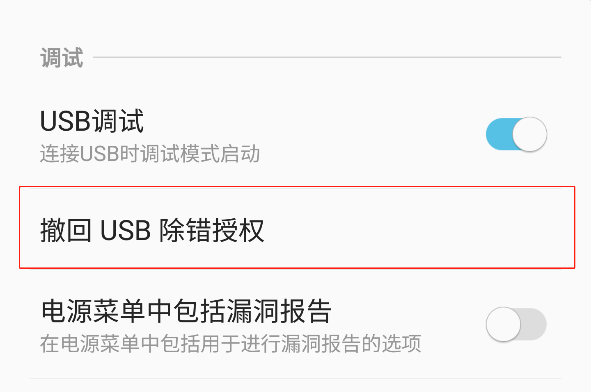

使用之前
本软件主要作用于安卓设备管控功能的激活与取消，使用过程中需要注意几点， 设备连接电脑之前，需要打开手机的USB调试模式，打开的操作步骤请点击此处查看; 执行激活操作之前，请备份系统分身/应用双开的重要数据，激活过程中会关闭该功能，手动关闭操作步骤请点击此处查看;
打开调试模式
注：打开USB调试模式后，连接电脑时会弹出允许调试提示框，请同意，如下图：

各常见厂商开启步骤：
华为：
设置 -> 关于手机 -> 连击版本号
打开开发者模式
设置 -> 系统和更新 -> 开发人员选项 -> 打开开发者选项
和USB调试
三星：
设置 -> 关于手机 -> 软件信息 -> 连击版本号
或者编译编号
打开开发者模式
设置 -> 开发者选项 -> 打开开发者选项
，打开USB调试
小米：
设置 -> 我的设备 -> 全部参数 -> 连击MIUI 版本
打开开发者模式
设置 -> 更多设置 -> 开发者选项 -> 打开开发者选项
，打开USB调试
VIVIO：
设置 -> 系统管理 -> 关于手机 -> 连击“软件版本号”打开开发者模式
设置 -> 系统管理 -> 开发者选项 -> 打开开发者选项
，打开USB调试
OPPO：
设置 -> 关于手机 -> 版本信息 -> 连击“版本号”打开开发者模式
设置 -> 其他设置 -> 开发者选项 -> 打开开发者选项
，打开USB调试
消失APP恢复
发现有APP消失的情况，可在软件首页点击消失APP恢复
使用该功能进行恢复操作。
关闭系统分身和应用分身
说明：
- 如果没有启用系统分身和应用分身可以忽略此操作
- 如果用户没有手动关闭，系统会自动关闭，为避免数据丢失，建议先备份数据再手动关闭
- 小米、OPPO、VIVO 手机必须手动关闭系统和应用分身，小米手机关闭系统和应用分身后需重启手机
- 系统分身在各个品牌手机上会有差异，如三星手机是安全文件夹、华为手机是隐私空间
华为：
设置 -> 隐私 -> 隐私空间 -> 删除隐私空间
三星：
安全文件夹 -> 设置 -> 更多设置 -> 卸载
手机连接不上电脑
请检查以下内容
- 检查数据线是否可用，正在充电不能当作可用判断条件，因为劣质数据线只可充电不可传输数据。
- 重新插拔USB接口，查看是否接触不良
- 下拉通知栏中切换USB选项为文件传输模式，部分手机需要切换到文件传输模式。
- 弹出
允许调试提示框
时是否没点击确定或者关闭了窗口，甚至没弹框，请前往开发者选项界面撤回USB授权后重新插拔设备，如下图所示